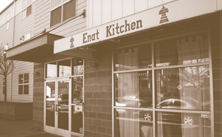

<!DOCTYPE>

<html>

	<head>
		<title>Enat Kitchen</title>

		<link type="text/css" href="styles.css" rel="stylesheet" />
		<link type="text/css" href="grid_styles.css" rel="stylesheet" />
		
		<meta http-equiv="Content-Type" content="text/html; charset=utf-8" />
		
		<link rel='stylesheet' type='text/css' media='all' href='reset.css' />
	    <link rel='stylesheet' type='text/css' media='all' href='grid.css' />
		<link rel='stylesheet' type='text/css' media='all' href='styles.css' />
		
		<!-- @fontface -->
		<link rel='stylesheet' type='text/css'  href='type/Quattrosans.css' />
		<link rel='stylesheet' type='text/css' href='type/puritan.css' />

		
		<!--Jquery library-->
		<script type="text/javascript" src="http://ajax.googleapis.com/ajax/libs/jquery/1.5/jquery.min.js"></script>
		<script src="http://ajax.googleapis.com/ajax/libs/jqueryui/1.8/jquery-ui.min.js"></script>
		<script src="http://ajax.googleapis.com/ajax/libs/jqueryui/1.8/jquery-ui.min.js"></script>
		  		
		<!--Cycle Plugin-->
  		<script type="text/javascript" src="http://cloud.github.com/downloads/malsup/cycle/jquery.cycle.all.latest.js"></script>
		<script type="text/javascript">
			
			$(document).ready(function() {
   			 $('.slideshow-pictures').cycle({
				fx: 'fade' 
			});
		});
		</script>
	
</head>

	<body class="press-page">
		
			<div id="header-wrapper" class="clearfix">
				<div id="header" class="container_12 clearfix">
				
					<div id="header_contact" class="grid_8 suffix_4">
						<h6>Mon-Sat 11:30AM - 10:00PM<br>
						(503)285-4867</h6>
					</div><!--end header contact-->
					
									
					<div id="nav" class="grid_7 suffix_1">
						<ol>
							<li><a href="index.html">home</a></li>
							<li><a href="#"><span class="page_selector">press</span></a></li>
							<li><a href="menu.html">menu</a></li>
							<li><a href="our_story.html">our story</a></li>
							<li><a href="contact.html">contact</a></li>
						</ol>
					</div><!--nav-->

					<div id="logo" class="grid_3 prefix_2">
						<a href="index.html"></a>
					</div><!--logo-->

				</div><!--end header-->				
			</div><!-- end nav_selector -->
		</div><!--end header wrap-->
			
			
			
		<div id="main-wrapper">
			<div id="press-main" class="container_12 clearfix">
				
				<div id="press-information" class="grid_12">
					<div class="intro-press">
						<h1>Press</h1>
						<h4>What the community is saying about Enat Kitchen…</h4>
					</div><!-- end intro-press -->
					
					<div class="add-bottom-margin grid_12"></div><!-- end add-bottom-margin -->
					<div class="add-bottom-margin grid_12"></div><!-- end add-bottom-margin -->
				
					<div id="date-logo">
						<div class="yelp-1 bottom-border">
							<h6>MARCH 30, 2012</h6>
							<a href="http://www.yelp.com/biz/enat-kitchen-portland"></a>
						</div><!-- end yelp-1 -->
					
						<div class="yelp-2 bottom-border">
							<h6>APRIL 29, 2012</h6>
							<a href="http://www.yelp.com/biz/enat-kitchen-portland"></a>
						</div><!-- end yelp-2 -->
						
						<div class="willamette bottom-border">
							<h6>JANUARY 25, 2012</h6>
							<a href="http://wweek.com/portland/article-18715-teff_love.html"></a>
						</div><!-- end willamette -->
						
						<div class="urban-spoon-1 bottom-border">
							<h6>JUNE 18, 2011</h6>
							<a href="http://www.urbanspoon.com/r/24/1523430/restaurant/Humboldt/Enat-Kitchen-Portland"></a>
						</div><!-- end urban spoon 1 -->
						
						<div class="urban-spoon-2">
							<h6>MAY 4, 2010</h6>
							<a href="http://www.urbanspoon.com/r/24/1523430/restaurant/Humboldt/Enat-Kitchen-Portland"></a>
						</div><!-- end urban spoon 2 -->
					</div><!-- end date-logo -->
						
						
					<div id="articles">
						<div class="yelp-1 bottom-border">
							<p>“Stop what you're doing right NOW and go to Enat Kitchen, on 300 N. Killingsworth. I had never had Ethiopian food before today and oh my 
							heavens…so good. We had the beef stew and then lamb stew in Berbere sauce - deep red spicy yumminess. Spongy delicious injera bread on the side. 
							Then we had lentils mixed with more of the injera, and finally, homemade cottage cheese. My nutty hedonist of a boyfriend asked for ghee to pour 
							on top of the cottage cheese - mouthgasm! Usually after a heavy meal I feel like plotzing but ohhhh it was so good, I felt so energized and happy 
							afterwards! What a great experience.”</p>
						</div><!-- end yelp-1 -->
						
						<div class="yelp-2 bottom-border">
							<p>“The best out of the four ethiopian places (two on Broadway, another in the burbs) I've tried in town so far.  I love Kitfo and Gored Gored,
							 and was never turned away here!  (many places only serve those dishes on weekends or special occasions). Try the  weekend buffet if you're in a 
							 hurry, and want a sampling of many of the standard greens/lentil dishes.  Tibs and wot , as everything else on the menu, made with care and 
							 quality.  Great vegan, or at least veggie options, too.  Very tasty, original, and made with absolute respect for the palate!”</p>
						</div><!-- yelp-2 -->
						
						<div class="willamette bottom-border">
							<p>“Teff Love; Crowning Portland’s best Ethiopian restaurant. SMALL SPOT, BIG FLAVORS: Enat Kitchen rates highest among the Portland Ethiopian
							 eateries we tried. What’s to like: Warm, rich flavors on big, juicy cuts of chicken and beef ($12.95 for the sampler). The salad was delightfully
							  fresh, and the vegetarian sampler ($9.95) came with Masir key wot (lentils) and Gomen (collard greens) that kept just the right amount of 
							  crispness, even after stewing.”</p>
						</div><!-- end willamette -->
						
						<div class="urban-spoon-1 bottom-border">
							<p>“Authentic & delicious. Sweet service as well. My new favorite restaurant in the neighborhood.”</p>
						</div><!-- end urban spoon 1 -->
						
						<div class="urban-spoon-2">
							<p>“Excellent traditional Ethiopian food. Great assortment of meat dishes from beef to lamb to chicken. They offer very generous portions, family
							 style. They also have wonderful Vegan dishes that are very filling. I highly recommend this new Ethiopian eatery! Great food! Great price! Very
							  friendly people.”</p>
						</div><!-- end urban spoon 2 -->
					</div><!-- end articles -->	
				
					<div class="add-bottom-margin grid_12"></div><!-- end add-bottom-margin -->

					<div class="pattern">
					</div><!-- end pattern -->
					
					<div class="add-bottom-margin grid_12"></div><!-- end add-bottom-margin -->
				</div><!-- end press-information -->
			</div><!-- end press-main -->
		</div><!-- end main-wrapper -->
		
		
		<div id="top-footer-wrapper">
				<div class="footer container_12 clearfix">
					<div class="top-footer grid_12">
						
						<div id="sub_footer_1" class="grid_3">
							<div class="hours">
								<h6 class="caps">Hours</h6>
								<p class="footer-text">OPEN Mon-Sat</br>
								11:30-10:00pm</p>
							</div><!-- end contact_heading -->
						</div><!--END SUB FOOTER1 ((phone & address/right))-->
						
						<div id="sub_footer_2" class="grid_6">
							<div class="location">
								<h6 class="caps">Location</h6>
								<a href="#"></a>
								<p class="location_text">Located a stones throw away from Portland Community College’s Cascade Campus on N. Killingsworth and 										Haight St.<p>
							</div><!-- end contact_heading -->
						</div><!--END SUB FOOTER 2 ((location & picture/middle))-->
						
						<div id="sub_footer_3" class="grid_2">
							<div class="contact grid_3">
								<h6 class="caps">Contact</h6>
								<p>(503) 285-4867</p>
								<p class="footer-text">300 N. Killingsworth</br>Portland, OR 97017</p>
							</div><!-- end contact_heading -->
						</div><!--END SUB FOOTER 3 ((hours/left))-->
						
					</div><!-- end top footer -->
				</div><!-- end footer -->
			</div><!--END top-footer-wrapper-->
			
			<div id="bottom-footer-wrapper">
				<div class="footer container_12">
					<div class="bottom-footer grid_12">
						
						
							<div id="created-by" class="grid_5 suffix_2">
								<h6>Created by PSU students <a href="#">Jamie Godfrey</a> and <a href="#">Katie Rassi</a></h6>
							</div><!-- end created-by -->
						
						<div id="bottom_nav" class="grid_4">
							<ol>
								<li class="line"><a href="index.html">home</a></li>
								<li class="line"><a href="press.html">press</a></li>
								<li class="line"><a href="#">menu</a></li>
								<li class="line"><a href="our_story.html">our story</a></li>
								<li><a href="contact.html">contact</a></li>
							</ol>
						</div><!--END BOTTOM NAV-->
					</div><!-- end bottom-footer -->
				</div><!-- footer -->		
			</div><!-- end bottom-footer-wrapper -->		
		</div><!-- end footer wrapper -->

	</body><!-- end press_page -->
</html>